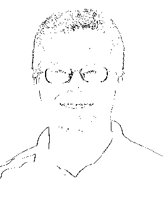

Another very common AP Free Response question is dealing with 2-D Arrays. As a refresher, we are going to do two new image processing assingments. First, look back at the Image Processing Assignment and review the use of Pixel[][]. The new assignments will follow a similar process.
Create a class named MoreProcessing. Add the following to it:

One way that computers can pull objects out of images is using edge detection, which looks at the colors of adjacent pixels and detects if the colors are 'far apart'. Create a method with the following header:
public static void edgeDetector(double threshold)
This method should loop through each pair of left-right adjacent Pixels and calculate their distance. For colors, their distance is found by using a Pythagorean Theorem style formula. The normal distance formula is:

With colors, instead of the differences between x and y, you use the differences between the red,green, and blue values of the left and right pixels. This will add a third part to the distance formula, but that's ok.
The edgeDetector method should create a new image of the same size as the original. If the distance between left/right pixels is greater than the threshold parameter, put a BLACK pixel where the left pixel was, otherwise put a WHITE pixel.
This strategy will accidentally leave the very last column null. You may fix this by making your new Pixel[][] one column shorter, or by filling the last column with WHITE pixels.
The sample image above has a threshold of 50.
To crop a picture is to look at an image and make a new image out of a smaller selection of it. Create a method with the following header:
public static void crop(int startRow, int startCol, int width, int height)
The purpose of this method is to crop a Picture using the four parameters as the boundaries of the rectangle
For example: Assuming you're using Sacco's picture, calling crop(25, 45, 170,200); should create an display a new Picture of width 170 and height 200. The new Picture's 0,0 should be the same as the old Picture's 25,40
Reminder: Sometimes using row and column can be confusing when you use so much x and y in your math class. Don't forget that the column is linked to the WIDTH, while the row is linked to the HEIGHT